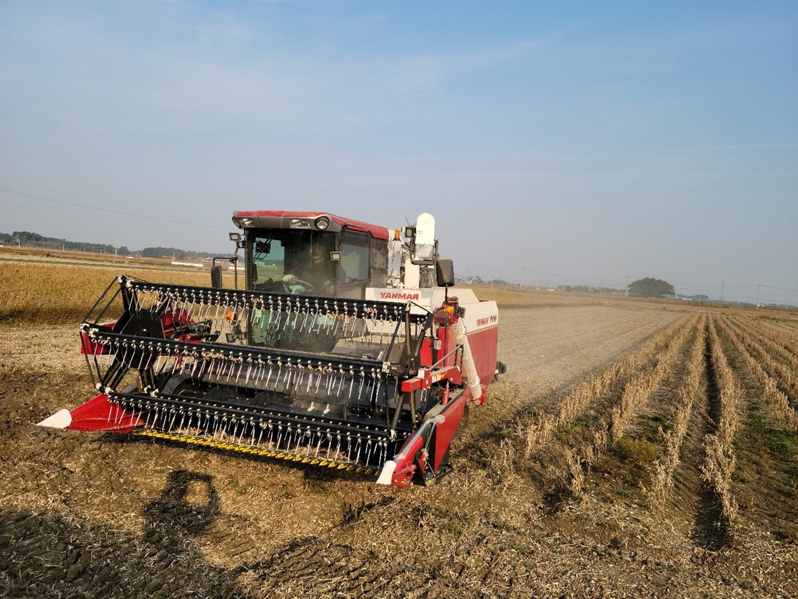
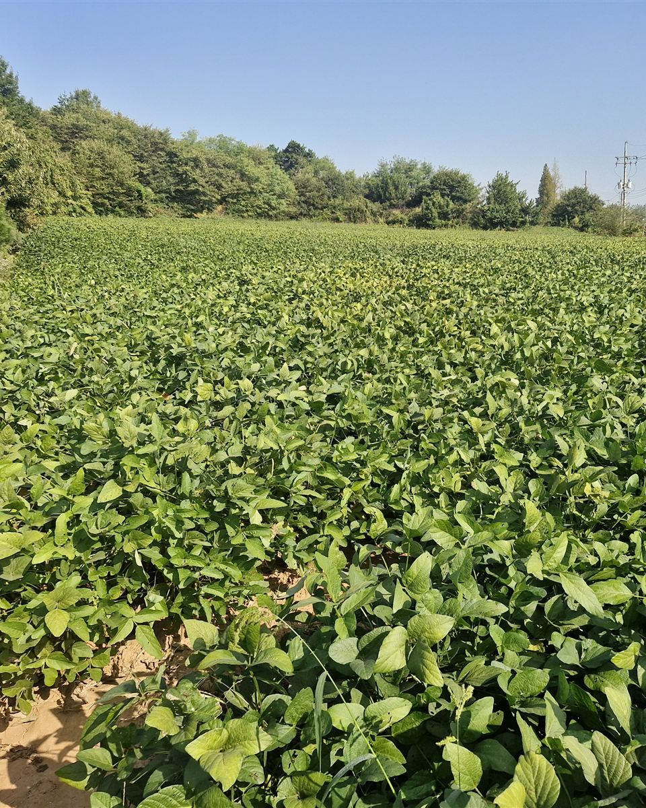
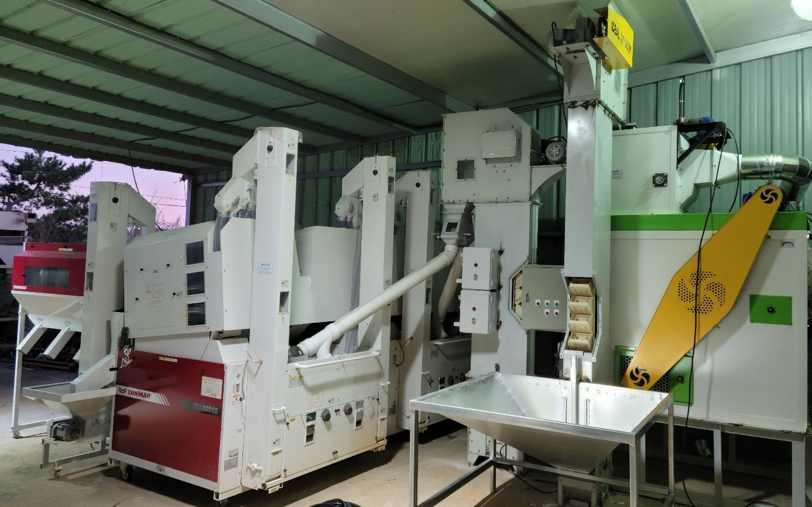
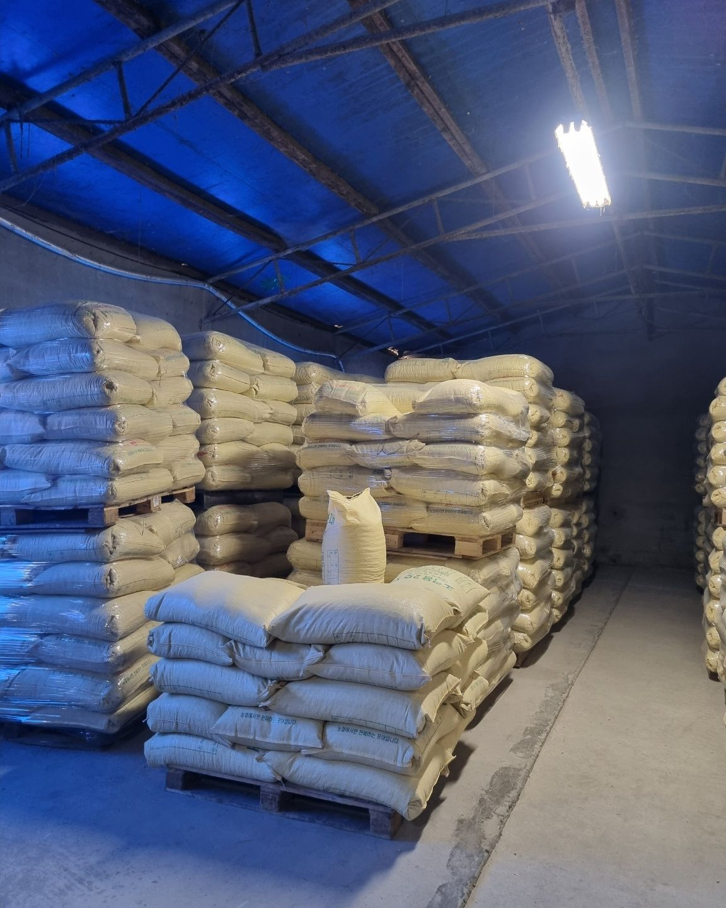

들녘과 식탁 사이,
한 걸음을 줄입니다
죽산들녘을 만드는 유한회사 한걸음 농업회사법인을 소개합니다.
콩을 중심으로 일하는
김제 죽산의 농업회사법인
한걸음은 전북특별자치도 김제시 죽산면에서 콩을 중심으로 일하는 유한회사 한걸음 농업회사법인입니다. 처음부터 유한회사 한걸음 농업회사법인으로 설립되었습니다. 주로 농가 농지에서 농작업 대행으로 직접 파종·관리·수확해 콩을 가져오며, 수매도 합니다. 거둔 콩은 고르고 보관해 내보냅니다.
지평선이 보이는 김제 평야에서 함께하는 농가들과 콩을 길러 왔고, 수확과 선별, 보관까지 한곳에서 챙깁니다. 지금까지는 주로 식품 회사와 유통 업체에 공급해 왔고, 이제 가정으로 바로 보내는 직거래를 시작합니다.

한눈에 보기
(2026년 기준)
- 상호
- 유한회사 한걸음 농업회사법인
- 브랜드
- 죽산들녘 (콩·팥 직거래 브랜드)
- 대표
- 김광배
- 소재지
- 전북특별자치도 김제시 죽산면 죽산로 153
- 하는 일
- 농작업 대행(파종·관리·수확), 콩 수매·선별·보관·유통
- 주요 품목
- 서리태·백태 중심 · 약콩(쥐눈이콩)·팥 [확인 필요: 물량·산지]
- 함께하는 농가
- 김제 지역 농가 27곳 (2026년 기준)
- 시설
- 선별장(석발기·선별기), 저장 창고
파종부터 유통까지
농가 농지에서 농작업 대행으로 파종·방제·수확하고, 선별한 뒤 유통합니다.
파종
한걸음이 농가 농지에서 농작업 대행으로 파종합니다.
방제
생육 중에 병해충 방제를 합니다.
수확
가을에 콩 전용 콤바인으로 수확합니다.
선별
석발기·선별기로 고른 뒤, 사람 손으로 한 번 더 선별해 보관합니다.
유통
식품 회사에 출하하고, 가정용은 소포장해 발송합니다.

농가와 함께 걷는 한 걸음
콩 농사는 해마다 날씨와 시세에 따라 결과가 달라집니다. 한걸음은 함께하는 농가의 콩이 제값을 받을 수 있는 판로를 넓히고 싶어 소비자 직거래를 시작합니다.
직거래로 판매가 늘어나면 함께하는 농가의 콩을 더 안정적으로 다룰 수 있습니다. 드시는 분과 기르는 분이 한 걸음씩 가까워지는 것, 그것이 회사 이름 '한걸음'의 뜻입니다. 브랜드 이름 '죽산들녘'은 콩이 자라는 김제 죽산면의 들녘에서 따왔습니다.
선별장과 창고



표시하는 것과, 아직 올리지 않는 것
원산지, 생산 연도, 판매원(유한회사 한걸음 농업회사법인)은 상품과 포장에 적습니다. GAP·친환경 인증, 통신판매업 신고번호처럼 확인되지 않은 내용은 자리만 남겨 두고, 확인되는 대로 올리겠습니다. 없는 인증을 먼저 붙여 두지 않습니다.